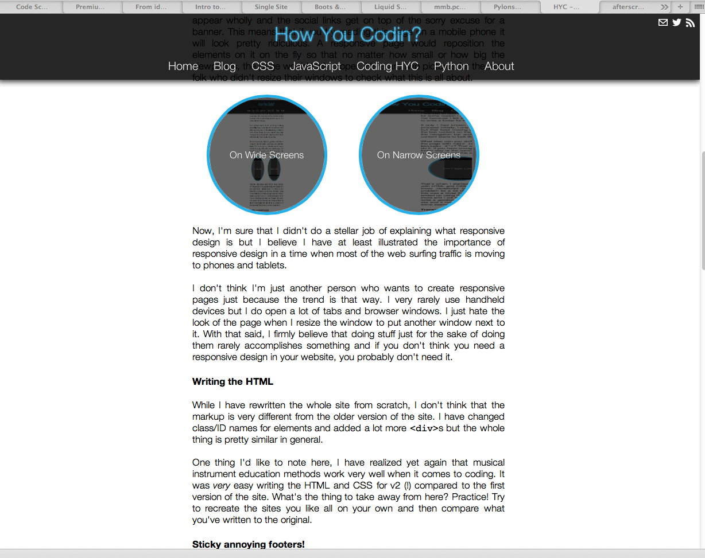

Redesign!
Well, I wouldn't say that I came up with the design all by myself, I had loads of input from friends and I spent a great deal of time looking at other sites that I liked, which in turn inspired me to work on a side project. But I'll talk about that later.
While I highly doubt it, if you have seen the old version of the site, you would have noticed that it looked pretty simple and bland. I liked the overall layout of the site but somehow it didn't pull me in to the content. Another reason for coming up with a new design is connected to the nature of this site. As you can find through various places on this site, I have created site to put the stuff that I learn on various places on the internet to use. I'm a firm believer in learning through doing.
The process of creating a new layout/design
Before I get into the specifics of the process, I would like stress one very important point: Always create a mockup before you start coding the real thing. I don't know why but even if I can visualize how I want the site to look in my mind, I find it easier to draw it with pen and paper and then work on it.
After you have a pretty good idea about how you want your site to look, it is time to start coding. Something I learned during my piano education is to always start small and build up gradually towards to the end product. This works not only for instrument education but for a lot of things in real life, creating a site with only CSS and HTML included. I started with a couple of <div> tags and added small parts until I got to what you see in front of you today.
Shortcomings
Although I like the new look of the site, I would like to point out that it is still far from being finished. It is not responsive for starters. You might be asking yourself "What the hell is responsive?" or you might saying to yourself "Oh, here's another guy who just blindly follows the current trends". Let me comment on both of those.
I can't really explain what responsive design is through my own words and if you google for responsive design you will find many resources that explain it much better than I could with words. Instead, while reading this page, try resizing your window horizontally. You will notice that if the page is wide enough, everything works as expected but if you make the page narrow enough things start to look weird. The navigation bar doesn't appear wholly and the social links get on top of the sorry excuse for a banner. This means that if you try reading this page on a mobile phone it will look pretty ridiculous. A responsive page would reposition the elements on it on the fly so that no matter how small or how big the viewport is, the page would look proper. Here are two pictures for the lazy folk who didn't resize their windows to check what this is all about.
Now, I'm sure that I didn't do a stellar job of explaining what responsive design is but I believe I have at least illustrated the importance of responsive design in a time when most of the web surfing traffic is moving to phones and tablets.
I don't think I'm just another person who wants to create responsive pages just because the trend is that way. I very rarely use handheld devices but I do open a lot of tabs and browser windows. I just hate the look of the page when I resize the window to put another window next to it. With that said, I firmly believe that doing stuff just for the sake of doing them rarely accomplishes something and if you don't think you need a responsive design in your website, you probably don't need it.
Writing the HTML
While I have rewritten the whole site from scratch, I don't think that the markup is very different from the older version of the site. I have changed class/ID names for elements and added a lot more <div>s but the whole thing is pretty similar in general.
One thing I'd like to note here, I have realized yet again that musical instrument education methods work very well when it comes to coding. It was very easy writing the HTML and CSS for v2 (!) compared to the first version of the site. What's the thing to take away from here? Practice! Try to recreate the sites you like all on your own and then compare what you've written to the original.
Sticky annoying footers!
I wanted to add a footer to the site when I first started writing the site but for some reason I didn't end up writing one. The lack of a footer bothered me because I felt like the bottoms of pages looked too empty. So, I had to write a footer for the new design.
If only I had known ahead of time that it would be such a frustrating process! Initially, I only put a <div> block after the end of the text content but that kept moving upwards or downwards according to the length of the text content on the page. If you have only a couple of lines in a page, the navigation bar and the footer get so close to each other that your content starts to look like a line across one big black box.
What else can you do? Absolutely positioning the footer to the bottom of the page with <div id="footer" style="position: absolute; bottom: 0">? That was my first instinct but sadly that isn't the way to do it. If you have enough content so that a vertical scrollbar appears, your footer stay at the same place when you scroll down. This is how it looks on page load and this is how it looks after you scroll down:
That's when I started googling. Keep in mind that I wanted to do it only with HTML and CSS with no JavaScript involved, mainly because I don't know JavaScript (yet). Interestingly enough, this turned out to be a problem for a lot of people, which kinda relieved me because I thought this was a trivial thing to do. There are a couple of solutions to this and I ended up using Ryan Fait's solution. I will write some pages for the CSS tricks and I will talk about sticky footers there. The reason: I don't want to write a gazillion lines' worth of text each time I change something on the site and it makes it easier to find stuff. Until then, you can google to find some examples (pffft, like someone will ever prefer my explanations).
Transitions, oh so beautiful transitions
I wasn't really content with the way my links looked when you hovered over them and I started noticing that other sites had a way of doing this gradually and smoothly. Hover over the sticky footer link and you'll see this in action.
I believe that the reason transitions clicked so deeply with me is the fact that you can make anything on your page appear to be "lighting up" under certain conditions. That is pretty neat!
So, how do you do it? I was afraid that it was JavaScript sorcery but it turned out to be CSS3 wizardry. There is this new property called transition and you can specify how a property of an element (color, background-color, background-img etc.) changes. You can specify time, the transition algorithm and the like. Check them out, they're pretty cool.
Other changes
Adding a sticky footer and transitions were the biggest changes in the code but there are other changes as well. The whole layout has changed, the color palette has changed and I learned how to make links open in new tabs (add target="_blank" to your <a> tags).
What will change over time?
As I said, I'm pretty happy with how the site turned out to be but there are a lot of things that still need work. I have a burning desire to make this website responsive and I just found out about Twitter Bootsrap, you should check it out too. It looks great out of the box but I hate the fact that a lot of sites have started looking alike because the coders don't bother to play around with Bootstrap. I will eventually switch to using Bootstrap and I will document the process from this site.
I will also start adding JavaScript to the site when I finally get around to learning it. I have found this great roadmap/tutorial/advice for learning JavaScript and I hope to start working on it shortly. Naturally, I will post about changes as they happen and talk about what was challenging etc.
Somewhere down the line, I will switch over to using a framework to serve content. Starting up this website was a great step to force myself to use what I have learned from Codecademy courses and expand on that knowledge but creating a new page and adding content to it is starting to be quite the hassle. Each time I add a new page, I have to update other pages as well and this can get out of hand in the future.
My current plan is to learn Django. I tried learning Django before but I lost interest after a while because I realized that I had no idea about how to style a web page. That is more or less out of the way now that I have some idea and I can start from scratch with Django.
Why Django? Well, I already code in Python and it would be natural for me to use a Python framework and Django appears to be the most widely used around. Django might seem overkill at the moment, after all I'm only serving static content, but I have plans for creating several full blown web applications in the future. If you only want to serve static content, check out Flask, it's seriously cool!
That's all for now, if you've read any part of this, I thank you from the depth of my heart.